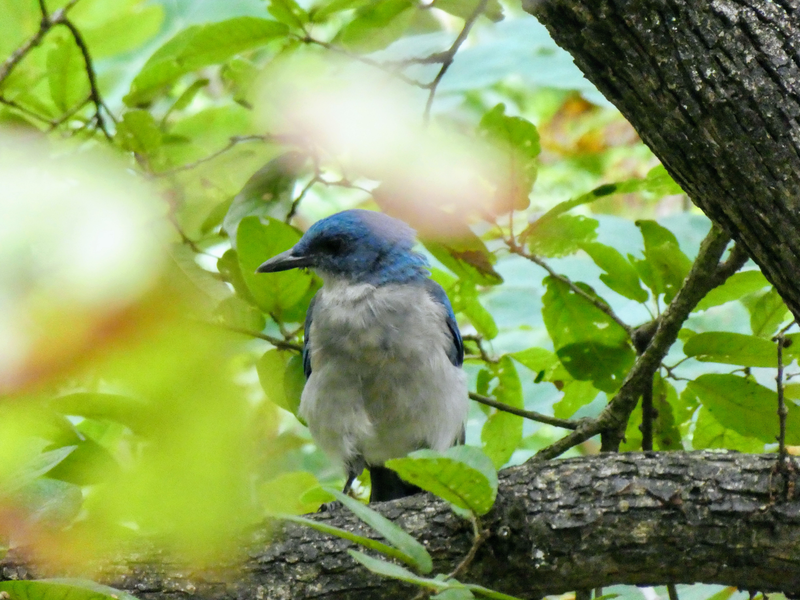
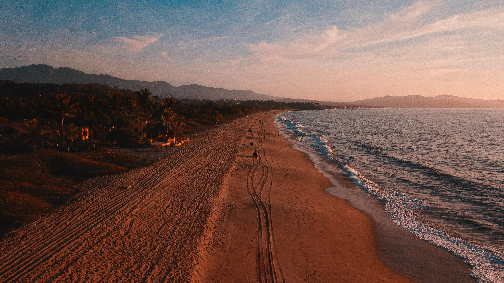

SOSTENIBILIDAD
Comprometidos con nuestros vecinos, el medio ambiente y el desarrollo
sustentable de nuestra comuna
-

-

-

Estudio de avifauna en las lagunas de Llolleo y la desmbocadura del río Maipo.
Paseo Bellamar, principal atractivo turístico del borde costero.
Organización y apoyo en actividades culturales de relevancia en nuestra comuna.